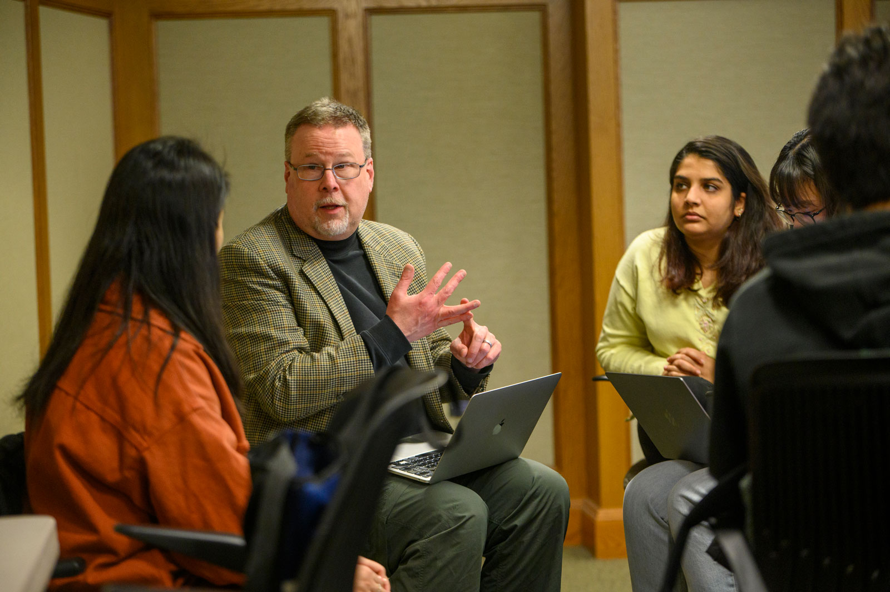
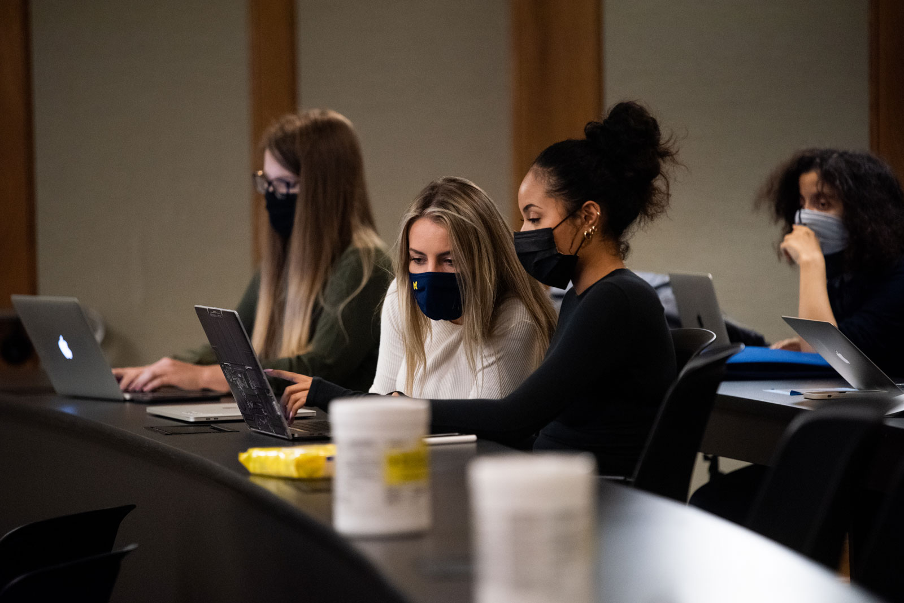

Academic Resources
This guide to advising and academic resources is available to all University of Michigan undergraduates, designed to support your educational path and help you achieve your academic goals.
BSI Academic Advising
 Scheduling an appointment with your BSI advisor
Types of Advising Appointments
Scheduled 1:1 Appointments
Scheduled 1:1 appointments are for students who need extended time with an advisor to answer more complex questions and situations. Appointments are available in 30-minute increments and can be booked through Navigate360.
Examples of Discussion Topics:
- Course planning and timeline to graduation
- Academic policies and degree requirements
- Considering and/or declaring a dual degree or graduate certificate
- Resources available at UMSI and UM
- Concerns related to academic progress
Drop-In 1:1 Appointments
Utilizing the office hours tool drop-in 1:1 appointments are an opportunity to meet 1:1 with an academic advisor in a drop-in format. Students needing 10 minutes or less to discuss an academic concern should consider attending a drop-in session. All drop-in sessions are virtual.
Examples of Discussion Topics:
- Backpacking and/or registration
- UMSI academic policies
- Resources available at UMSI and UM
- Degree requirements
- General questions
Meet the Advisors
Learn more about our dedicated team of advisors who are here to guide and support you throughout your academic journey. Discover how you can connect with them for personalized advice and resources tailored to your educational goals.
You can always reach us via email at umsi.advising.bsi@umich.edu for any questions you may have.
Advising Business Hours:
Monday - Friday: 9am-5pm EST
The advising office is closed on all university holidays.
Contact
Email: umsi.advising.bsi@umich.edu
UMSI Tutoring & Academic Support
Tutoring and academic support resources are available to all UMSI students, crafted to help your academic journey both in and out of the classroom.
UMSI Peer Tutoring Program
Collaborating with UMSI faculty, the UMSI Peer Tutoring program offers UMSI students and those enrolled in UMSI courses the chance to connect with peer tutors for assistance and support in their classes.
For more information about student support and tutoring, feel free to reach out to us at umsi.academicsuccess@umich.edu.
Michigan Library
The University of Michigan Library website serves as a comprehensive portal offering access to a vast collection of digital and physical resources, research tools, and services. You get access to academic databases, online journals, catalogs, and personalized research assistance, facilitating effective research and learning through the library. It is accessible to all students, faculty, and researchers at the University.

Library Catalog
The Catalog is the definitive place for finding physical and online materials held or offered by the U-M Library. You are most likely to find books, audio, video, maps, musical scores, archival materials, articles, journals, and more here.
The Libraries:
Discover a variety of inviting spaces in our 4 main libraries, perfect for exploring, studying, and collaborating, whether you prefer quiet reflection or dynamic group work.
- Hatcher Library
- Shapiro Library
- Art, Architecture, and Engineering Library
- Taubman Health Sciences Library
Hatcher Library
Hours:
Monday - Thursday: 8am - 12am
Friday: 8am - 5pm
Saturday: 10am - 6pm
Sunday: 1pm - 12am
Address:
913 S. University Ave
Ann Arbor, MI 48109
Shapiro Library
Hours:
Monday - Thursday: 24hr (MCard required for access from 12am to 8am)
Friday: Closes at 6pm
Saturday: 10am - 6pm
Sunday: Opens at 10am
Address:
919 S. University Ave
Ann Arbor, MI 48109
Art, Architecture, and Engineering Library
Hours:
All week: 24hr (MCard required for access from 10pm to 8am)
Address:
2281 Bonisteel Blvd
Ann Arbor, MI 48109
Taubman Health Sciences Library
Hours:
Monday - Friday: 9am - 5pm
Saturday & Sunday: Closed
Address:
1135 Catherine St
Ann Arbor, MI 48109
Michigan Library Contact
Phone: 734-764-0401
Sweetland Center for Writing
The Sweetland Center for Writing at the University of Michigan offers comprehensive support for student writing across all levels and formats. It manages key writing requirements for the College of LSA, provides one-on-one tutoring for undergraduates, and offers writing courses ranging from all levels.
Sweetland also supports multilingual and international undergraduates with specialized courses and resources, and assists faculty teaching these students.
Additionally, Sweetland offers the Sweeland Minor in Writing, promotes new media and multimodal writing, and organizes workshops and seminars, including the Dissertation Writing Institute and the Sweetland Fellows Seminar.
Writing Support
Sweetland offers workshops, in-person or online discussions, or written feedback for currently-enrolled, U-M Ann Arbor undergraduate students to receive writing support.
Writing Guides
These guides cover a wide range of topics, from understanding assignments and planning essays to refining arguments and improving style. They offer practical advice and strategies to help students develop their writing skills and succeed in academic writing across disciplines.
Peer Writing Consulting Program
The Sweetland Peer Writing Consultant Program allows undergraduate students from the University of Michigan to help their peers with writing. These trained peer writing consultants offer traditional in-person sessions at the main Peer Writing Center in the Shapiro Undergraduate Library (2160) and its satellite locations, as well as online video meetings and asynchronous written feedback.
If you're interested in scheduling an in-person session with a Peer Writing Consultant, you can click this link to schedule a Peer Writing Center Appointment on their Writing Support page.
Contact
Phone:734-764-0429
Email: sweetlandinfo@umich.edu
Academic Offices Addresses
105 S. State Street
1310 North Quad
Ann Arbor, MI, 48109
Writing Consultation Locations
Writing Workshop:1310 North Quad
Peer Writing Center:2160 Shapiro Undergraduate Library
Peer Writing Center Satellite:1059 Alice Lloyd Hall
Services for Students with Disabilities
Welcome to the Services for Students with Disabilities (SSD) at the University of Michigan.
Accommodations
Our accommodations are designed to support students with disabilities by providing equal access to educational opportunities and fostering an inclusive academic environment. Whether you need assistance with exams, housing, or classroom accessibility, our team is here to help ensure that your educational experience is equitable and supportive. Visit our accommodations page to learn more about the specific services available and how to request them.
Requesting Accommodations
We are excited to introduce Accommodate, our new electronic case management system that streamlines the process of requesting, approving, and implementing disability-related accommodations for students, faculty, instructors, and staff. This system replaces previous VISA Letters, enhancing our ability to support the University of Michigan community. To learn more about how to use or login to Accommodate to request your disability related accommodations, click here.
Visit our Students and Faculty/Staff pages to learn more about the process and to find step-by-step instructions tailored to your role. We are committed to fostering an inclusive and equitable educational environment and are here to assist in your academic journey.
Please reach out to ssdoffice@umich.edu if you have any questions!
Contact
Phone:734-763-3000
734-936-3947
Email: ssdoffice@umich.edu
Address
G-664 Haven Hall
505 S. State Street
Ann Arbor, MI, 48109
Hours: 8am - 5pm